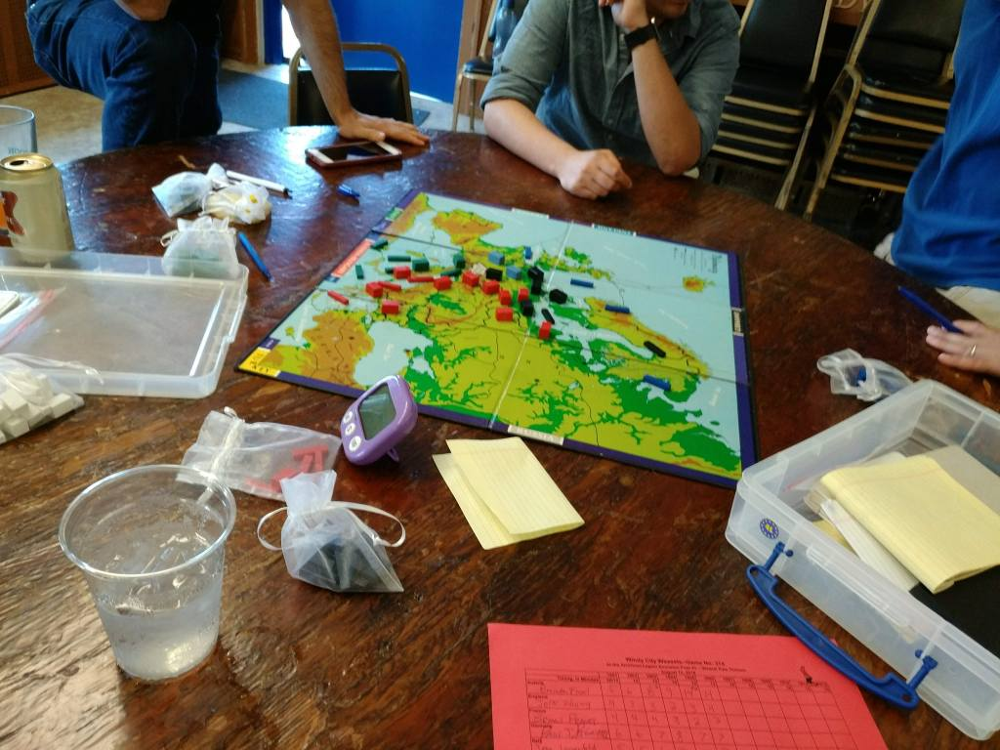

Personal website
August 15, 2018
This Sunday I was at the Weasel Pyle for two games of Diplomacy. The Pyle is basically the last public games of the entire year for the Windy City Weasels, who play roughly tri-monthly. The players who have the highest scores per country at the end of the year get trophies, and the top 7 overall players get invited to a invitational game. I hadn’t played any of the other games so my total score going in was 0, and thus my goal was to get a large result that could win me a best country trophy.
So in my first game, I was playing England. Italy and Germany ganged up on France, but I preferred working with France to working with Germany so I mentioned to France to cover Burgundy and opened East. France however did not cover Burgundy and so he ended up playing home defense for the vast majority of the game. I made a bad gamble by trying to sneak into Denmark, and Germany unexpectedly (though I should have seen it coming) gets 3 builds by moving out of Burgundy and into Belgium. Germany then builds 2 fleets, which hampers our ability to work together for the rest of the game. While Germany and I do end up working together to take out some Russian dots, it’s a tepid alliance and I know that he is only looking for an opportunity to take my centers. Near the end-game Austria is about to solo and Germany asks me to help stop Austria from winning the game. Austria by the same token asks me to help him win the game.
I usually work to stop the solo because that way I would get at least some points. But in this game, because of the massive Austria score my point total from the game is very low. If Austria solos, I would get 0 points, but if we stop the solo I still basically get 0 points. So, since it didn’t matter either way to me, I decided to throw the solo to Austria because I wanted him to win over Germany.
Germany tried convincing me otherwise, but the issue was that he had never really helped me. I had actually asked Austria several times to invade Germany just because of how he would keep trying to take the North Sea and take over my home centers. So that’s why Austria’s pitch kind of made sense: if I throw the solo, then it de-incentivizes people in the next game from trying to eliminate me when there is a solo threat. Another deciding factor for me was the fact that Germany started to get very frustrated while Austria was calm throughout the entire game. The point is, winning the game stopped being a motivation for me because it was impossible for me to win.
What do you think about king making? Should I have stuck it out and prevented the solo? Let me know in the comments, and make sure to subscribe if you enjoy this content!
